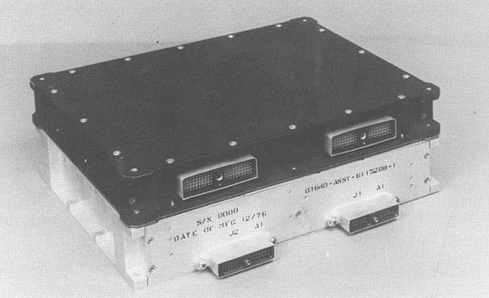

Computers in Spaceflight: The NASA
Experience
- Part Two: Computers On Board
Unmanned Spacecraft
-
- Introduction
-
-
- [135] Unmanned
spacecraft computers differ from manned spacecraft computers in
that they are designed to work much longer and use much less
spacecraft resources. A typical manned mission lasts a week or
less; the exception was Skylab, whose computers operated for 9
months straight and again later during its reactivation mission.
Unmanned missions in earth orbit or to the outer planets can last
a decade or longer. Manned spacecraft usually carry large
auxiliary power units based on fuel cell technology, as power
requirements for life support, experiments, and computers are
high. Spacecraft in earth orbit are often dependent on solar cell
arrays, which are by nature low-power generators. Interplanetary
probes use either solar cells or small radioisotope generators.
Clearly, these circumstances cause different requirements for
computers.
-
- Of the two types of unmanned spacecraft,
one is designed for earth orbit operations and the other flies to
the moon, planets, or deep space. Earth orbiters usually need no
navigation after achieving orbit; space probes, however, are
critically dependent on proper guidance. Earth orbiters can be
commanded nearly instantaneously from the ground during the
roughly 10% of the time they are "visible" to ground stations.
Interplanetary probes need to be autonomous, at least capable of
independent routine operation, due to speed of light delays in
communication and longer periods out of earth control. Multiple
missions and simple geography prevent interplanetary probes from
being in constant contact with the three Deep Space Network
stations. Therefore, the basis of fault handling on an
interplanetary probe is failure detection and repair, whereas
earth orbiters concentrate on "safing" the spacecraft until the
ground stations can help out. For these reasons, computers became
more sophisticated on spacecraft designed to leave the gravity
pull of the earth.
-
- Moreover, the different computers have
distinct origins. Many near earth spacecraft used a variant of a
single machine developed at the Goddard Space Flight Center,
whereas the Jet Propulsion Laboratory (JPL) of the California
Institute of Technology, a long time NASA contractor, has
dominated computer construction for deep space flight, designing
and building an evolving series of computers for the Agency's
interplanetary probes. These two lines of development represent
the most fruitful of NASA's forays into computer [136] research.
Computers on manned spacecraft were generally developed from other
computers (Apollo from Polaris; 4Pi from the System 360).
Computers in ground operations were adapted from commercial
machines. However, computers on unmanned spacecraft were custom
designed. In these cases, NASA was not only a contract monitor but
was actively involved in development.
-
- The making of the first NASA Standard
Spacecraft Computer, which has controlled a number of
earth-orbiting missions, has been described
elsewhere*. As can be inferred by its name, NASA designed this
computer to fly on multiple, varying missions, which it has done
to good effect. For example, both the Solar Maximum Mission and
the Hubble Space telescope used the computer. Goddard Space Flight
Center led development of the device over a 10-year period from
the late 1960s to the late 1970s.
-
-
-
-
[136]
-
- 
-
- Figure B: The NASA Standard
Spacecraft Computer I in its packaging. (NASA photo)
-
-
-
-
- In contrast, machines built at JPL have
had a longer and more related history. Although some reuse has
occurred, the, various space probes built at JPL carried
mission-unique computers of increasing [137] power and
complexity, paralleling the development of computers for manned
spacecraft. Unlike the manned programs, however, JPL sponsored
fundamental research into spacecraft computing, which was then
translated into concepts that guided the development of flight
systems. The result was a series of innovative and flexible
on-board computers.
-
-
*See Raymond G. Hartenstein, Ann C.
Merwarth, William N. Stewart, Thomas D. Taylor, and Charles E.
Trevathan, "Development and Application of NASA's First Standard
Spacecraft Computer," Commun. ACM, 27(9), 902-913 (September
1984.)